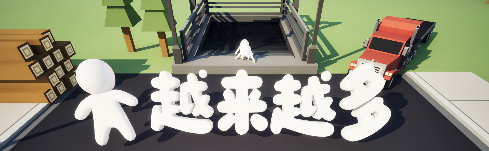
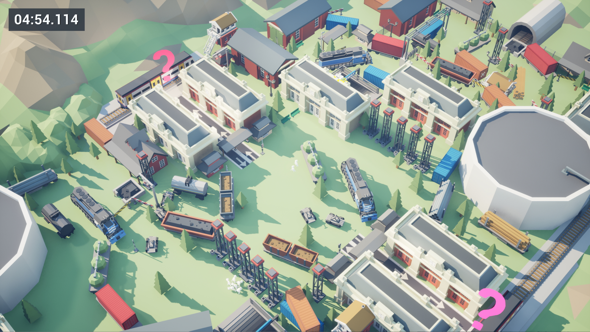
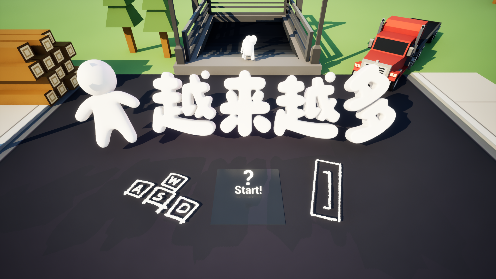
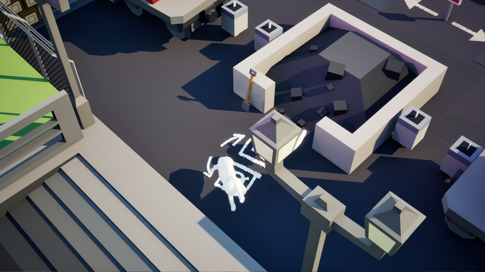
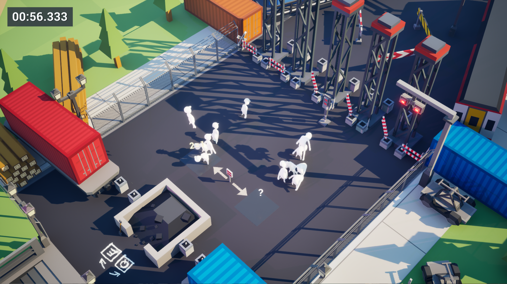
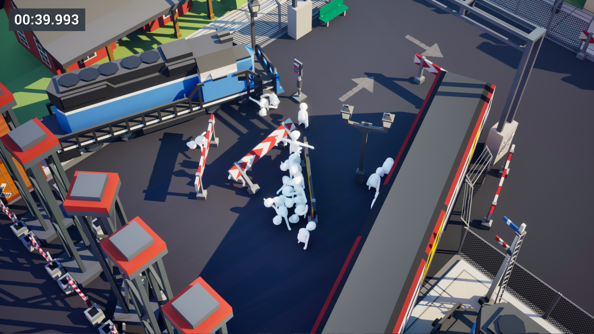

同步行动
一次方向输入作用于所有乘客。相同的命令，会因站位、碰撞和地形产生完全不同的结果。

SCROLL下一班车，即将停止检票。
节假日高峰，车站临时调整了乘车安排。随着发车时间临近，站台上的乘客不断增加，不同车厢需要按照规定人数接收乘客。
玩家需要在倒计时结束前，同步引导整个人群穿过闸机与拥挤的站台，借助护栏、狭窄通道、候车区和环境机关，将难以控制的人群分开，再送往对应车厢。
每一个人都是通关所需的数字，也是会推搡、跌倒、堵住路口的物理实体。人越多，力量越大；人越多，秩序也越脆弱。
ONE INPUT. EVERY PASSENGER.
一次方向输入作用于所有乘客。相同的命令，会因站位、碰撞和地形产生完全不同的结果。
新乘客持续加入队伍。增长带来推开障碍的力量，也让每一次转向和穿门变得更难。
利用护栏、墙角、传送带与狭窄通道，让同步移动的人群自然分离，形成需要的数量。
把正确人数送进指定区域。多一个不行，少一个也不行——车门只认数字，不等迟到的人。

MISS THE COUNT. MISS THE TRAIN.
GAMEPLAY TRAILER
将视频命名为“游戏演示.mp4”，放入“视频”文件夹后即可自动显示CONTROL THE CROWD




SIMPLE TO COMMAND. HARD TO CONTROL.